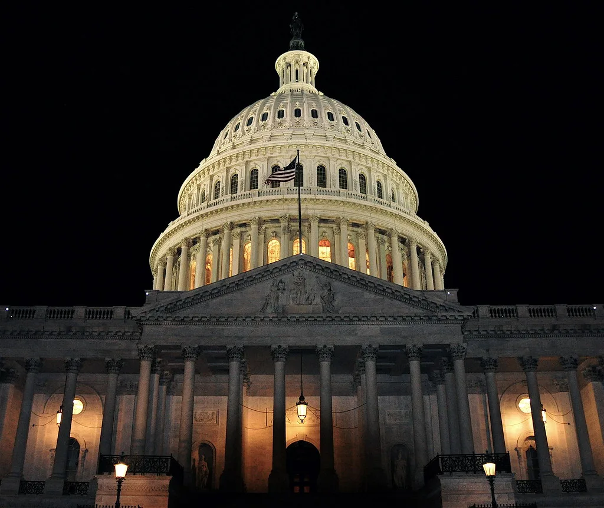

3500억달러 쥔 한미전략투자공사, 출범 이틀 만에 첫 국정감사 받는다
20일 국회는 법제사법위원회와 기획재정위원회를 포함한 12개 상임위원회에서 동시에 국정감사를 진행했다. 특히 기획재정위원회 감사에서는 불과 이틀 전인 18일 세종시에서 공식 출범한 한미전략투자공사가 처음으로 국감대에 섰다. 거대한 규모의 대미 투자를 전담하는 신설 기관이 출범과 동시에 검증대에 오른 셈이어서 여야의 관심이 집중됐다.
한미전략투자공사는 지난해 11월 체결된 한미 전략투자 양해각서(MOU)에 따른 대미 전략적 투자 이행을 지원하기 위해 설립된 기관이다. 올해 제정된 한미전략투자법에 근거해 설립 절차가 마무리됐으며, 세종시 나성동 사옥에서 열린 창립 기념행사에서 구윤철 부총리 겸 기획재정부 장관은 "공사는 총 3500억달러 규모의 대미 투자를 전담하는 기관"이라고 소개했다. 3500억달러는 우리 돈으로 약 467조원에 달하는 액수다.

이날 국감에서 여야 의원들은 이 막대한 투자금의 집행 체계에 질의를 집중했다. 투자 결정의 주도권을 누가 쥐는지, 투자 수익성을 어떻게 담보할 것인지, 리스크 관리 체계는 충분한지 등이 핵심 쟁점으로 다뤄졌다. 공사가 출범한 지 얼마 되지 않아 아직 세부 운영 체계가 자리를 잡지 못한 상황에서 이뤄진 첫 감사라는 점에서, 의원들은 구체적인 집행 계획과 책임 소재를 캐묻는 데 집중했다.
같은 날 다른 상임위에서도 주요 쟁점이 쏟아졌다. 과학기술정보방송통신위원회는 국가과학기술연구회와 한국과학기술연구원 등을 대상으로 한 감사에서 연구과제중심제도(PBS) 폐지 여부를 두고 질의를 이어갔다. PBS 폐지는 연구자들의 과제 수주 부담을 줄이고 안정적인 연구 환경을 조성할 수 있을지가 관건으로 꼽힌다. 국방위원회에서는 국군사관학교 통합 추진을 둘러싼 여야 공방이 벌어졌다.
한미전략투자공사 설립을 둘러싼 논란은 이번이 처음이 아니다. 올해 초 투자기구 설립이 논의되던 단계부터 수익성과 투자 주도권을 둘러싼 이견이 꾸준히 제기돼 왔고, 일각에서는 설립이 지나치게 속도전으로 추진되고 있다는 지적도 나왔다. 이런 배경 속에 출범 직후 치러진 이번 국감은 공사의 운영 방향을 가늠하는 첫 시험대로 받아들여진다.
이번 대미 투자는 한미 양국 간 관세·통상 협상과도 맞물려 추진돼 온 사안이다. 지난해 전략투자 MOU 체결 당시부터 투자와 통상 현안이 하나의 패키지로 다뤄졌던 만큼, 공사 설립은 그 합의를 제도적으로 뒷받침하는 후속 조치로 평가된다. 이 때문에 국회 안팎에서는 투자 집행 속도를 어느 정도로 가져갈지, 그리고 그 과정에서 국익을 어떻게 확보할지를 둘러싼 균형점 찾기가 앞으로도 계속 중요한 과제로 거론될 것으로 보인다.
여야는 국감을 계기로 공사 측에 투자 집행의 세부 계획과 예산 운용 현황을 보다 투명하게 공개하라고 요구할 가능성이 크다. 신설 기관인 만큼 초기 거버넌스를 둘러싼 논쟁은 당분간 이어질 것으로 보이며, 향후 국회 상임위 차원의 추가 보고와 점검이 이뤄질 것이라는 전망이 나온다. 국책 투자기구가 출범 직후부터 국감 대상에 오른 것은 이례적인 일로 꼽히는 만큼, 이번 감사에서 제기된 지적들이 공사의 초기 운영 지침과 투자 집행 원칙을 가다듬는 데 실질적으로 반영될지가 관심사로 남는다.